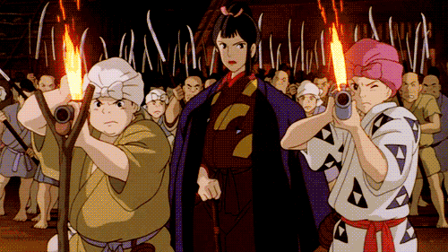

Sinopsis
Con el fin de curar la herida que le ha causado un jabalí enloquecido, el joven Ashitaka sale en busca del dios Ciervo, pues sólo él puede liberarlo del sortilegio. A lo largo de su periplo descubre cómo los animales del bosque luchan contra hombres que están dispuestos a destruir la Naturaleza. (FILMAFFINITY)
Ficha técnica
| Dirección |
|
|
|---|---|---|
| Producción | Toshio Suzuki | |
| Productora | Studio Ghibli | |
| Guion | Hayao Miyazaki | |
| Música | Jō Hisaishi | |
| Fotografía | Atsushi Okui | |
| Montaje | Takeshi Seyama | |
| País | Japón | |
| Año | 1997 | |
| Estreno | Japón:12 de julio de 1997 USA: 23 de octubre de 1999 |
|
| Género | Animación, fantasía | |
| Duración | 134 minutos | |
| Idioma(s) | Japonés | |


La Princesa Mononoke en imágenes:
